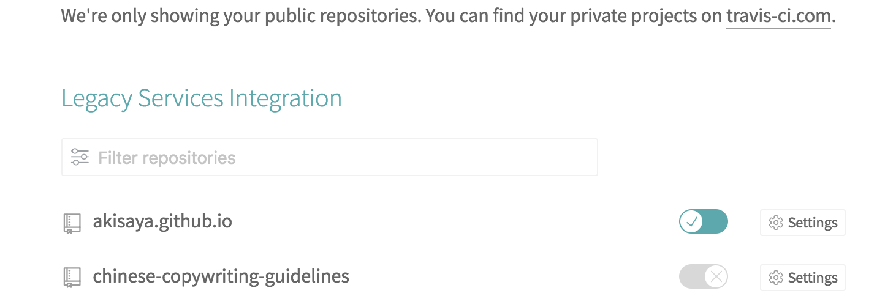
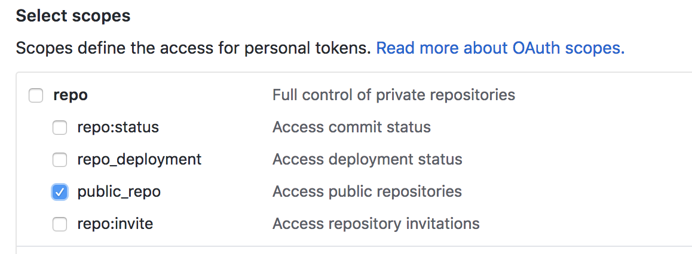
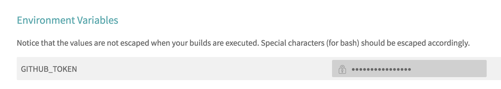

偶然点进去同事的博客，看到了使用 Travis CI 自动化部署 hexo 博客的文章，突然有点手痒了。从电脑角落里翻出来以前 hexo 的博客，发现只有寥寥两篇，而且最近的一篇还是过年的时候，这时候真觉得自己又开始部署 hexo 只是为了打发时间，某天又想起这个博客的时候最新的怕还是这篇自动化部署的碎碎念。不过，生命在于折腾，这便开始吧。
什么是 Travis CI
CI 即持续集成（Continuous Integration），CI 主要是针对开发中的频繁迭代的代码更新，做自动化的构建和测试工作，及时发现代码中的bug，Travis CI 就是提供这种持续集成能力的服务。
Travis CI 跟 Github 是绑定在一起的，使用 github 账号登录 Travis CI 后能看到 repos，勾选相应的 repo 后，它能够自动检测 其中某个分支上的 commit，然后拉取仓库中的代码, 基于 .travis.yml 中的配置运行定制化的命令。因为我们的 hexo 博客就是在根目录下运行 hexo g -d，然后将编译完成的静态文件 push 到 github master 分支，所以我们自然可以通过将 hexo 博客的源码保存在 github 分支上，让 Travis CI 监测这个分支，每当有 commit 的时候，就自动拉取该分支然后编译

自动化部署
Travis CI 官网本身提供了一个部署文件到 github pages 的最小化配置1
2
3
4
5
6
7deploy:
provider: pages
skip-cleanup: true
github-token: $GITHUB_TOKEN # Set in the settings page of your repository, as a secure variable
keep-history: true
on:
branch: master
我们只有基于这个配置添加 hexo 相关的必要步骤就行
github-token 的作用是为了让我们有权限将编译后的静态文件有权限推回 github，我们需要在 github 的 personal access token 里设置，该 token 权限应该尽量小，对于我们自动自动化部署博客这个场景来说，只需要勾选 public_repo 就行了。

复制后生成的 token，在设置面板里添加环境变量

启用 Travis CI 这一部我们就做好了，剩下就是配置好 .travis.yml1
2
3
4
5
6
7
8
9
10
11
12
13
14
15
16
17
18
19
20language: node_js #指定环境为 Node.js
node_js:
- "6.0.0"
before_install:
- export TZ='Asia/Shanghai' #设置时区 非必须
script:
- hexo generate #生成博客
deploy:
provider: pages
skip_cleanup: true
github_token: $GITHUB_TOKEN
local_dir: public
repo: AkisAya/akisaya.github.io
target_branch: master
on:
branch: source
配置文件也很简单，branch: source 指的是监控 repo 上的 source 分支，我们的博客源码就是保存在该分支上，local_dir 指的是要推送的文件夹，hexo 编译完成后生成的静态文件就是在 public 文件夹里，repo 就是推送的 github repo，默认是当前 repo，命名规则是 username/repo-name, target_branch 是我们要推送到的分支。将这个配置文件放在 博客源码目录，一起推送到 github 上就行了。
踩坑
推送源码到 github 的 source 分支上意味着我们的根目录就是 git 的 repo，但是同时，themes 下的主题也是一个 git 的 repo，所以两者之间是构成了 submodule 的关系，如果 root repo 没有添加这个 submodule 的话，push 的时候没有把 themes 下的文件也 push 上去，结果造成 Travis 构建的时候没有样式模板生成静态文件。
用 git submodule add https://github.com/AkisAya/hexo-theme-next.git themes/next 添加了 submodule 再推送，发现在 github 里 source 分支下的 themes/next 实质上是一个超链接，链到刚才指定的仓库，这个时候 travis 构建的时候就会分别从我们的 source 分支和主题对应的分支拉取代码。但是这个时时候回出现什么问题呢，由于本地主题我们其实是有修改的，可能导致 source 分支上的 主题分支的 commit id 与 主题仓库的 commit id 不一致，然后 travis 拉取主题代码的时候就会失败。后来我直接把主题的源仓库 fork 了一份，添加 submodule 的时候关联到我 fork 的这个仓库，使 submodule 的 commit id 与 源仓库的 commit id 保持一致算是暂时解决了这个问题。
结语
折腾完了，最后我也不想搞 Travis CI 自动部署了。其实最后会发现，Travis CI 并没有减少什么部署步骤。
在本地编译部署你只需要1
2hexo new post "xxx.md"
hexo g -d
使用 Travis CI 的话你需要1
2git add xxx
git commit -m "xxx"
你看，其实并没有减少什么工作量，反而是如果以后想要更新主题的话，本地拉取更新感觉更方便。也可能是我的使用姿势不对吧。
不过，博客源码倒是在 github 保存了一份，不用担心丢失，或者有多台电脑写博客的需求的话，checkout 分支然后 commit 确实方便很多了